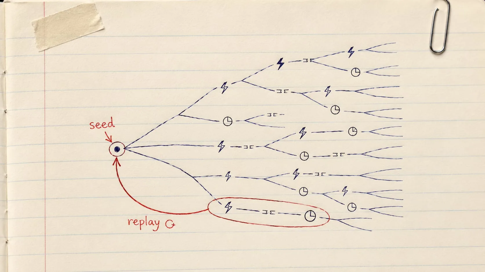

A Practice Notebook · Exploring Hostile Executions, Deterministically
Deterministic
Simulation Testing
Run real production logic through a thousand hostile timelines — crashes, partitions, torn disks, skewed clocks — and make every single failure exactly replayable.
Told by The First-Principles Physicist — first principles, playful, one replayable seed at a time

A hand-drawn practice-notebook sketch: ballpoint linework with red-pen annotation on cream ruled paper, slightly imperfect strokes, hand-lettered arrows and margin marks, a hint of tape or paper-clip realism. Warm and informal — obviously drawn by a person, not rendered. Subject: on the left margin, one small circled dot labeled "seed" in red pen; from it, several thin ballpoint lines fan rightward and branch repeatedly like a tree of diverging timelines, each branch passing through small hand-drawn glyphs suggesting trouble (a jagged lightning bolt for a crash, a broken line for a network partition, a tiny clock with a bent hand for clock skew); one branch near the bottom is circled in red pen with a small red arrow looping back to the original seed dot, annotated "replay ↺" — the idea that a hostile run can be traced back to its exact cause. Generous whitespace, no other text baked in beyond the two short labels described. Target size ~1280×720px, 16:9 landscape; compose for a small on-page figure with the subject centred and safe margins — it is letterboxed into a 16:9 box, so keep nothing important near the edges.
Generate this with your image agent, then drop the file here.
Table of Contents
Ten chapters, problem to capstone
Part I · The Problem & The Idea
- Why Conventional Testing Failsheisenbugs, flakiness, and why fuzzing/chaos aren't enough
- The Determinism Contractcontrolling every source of nondeterminism
Part II · Building It
- Architectures for DSTsimulation-first vs. deterministic hypervisor
- Building the Simulatorevent queues, simulated network, disk, time
Part III · Exploring & Judging
- Workloads & State-Space Explorationgenerative workloads, shrinking, swarm testing, buggification
- Oracles: Deciding Whether a Run Is Correctsafety, liveness, and reference models
- Fault Modelscrash, network, storage, clock — and staying realistic
Part IV · Living With It
- Debugging & Developer Workflowtime travel, shrinking, CI seed farms
- Limits & Complementary Techniquesthe simulation gap, and what to pair DST with
Part V · Capstone
One promise runs through every chapter: explore as many hostile executions as we can stand, but make every single failure exactly replayable. Jump to the Cheatsheet →